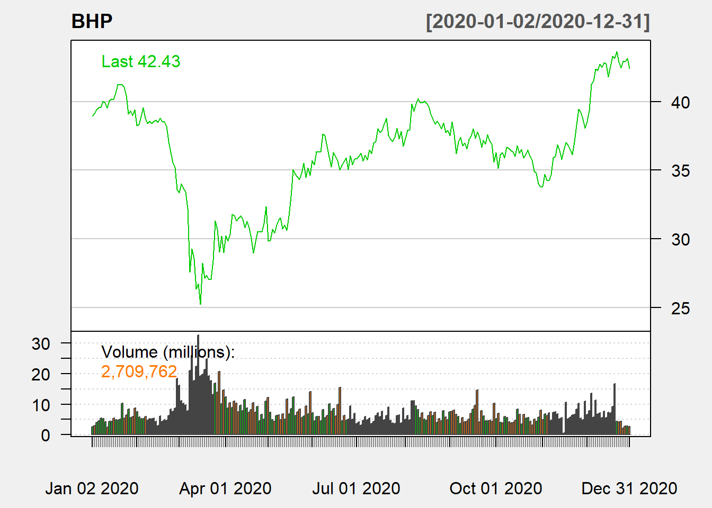

1.2 Technical Charts
Here we will use the quantmod and TTR package to generate some Technical Charts. The data will be downloaded from Yahoo Finance.
1.2.1 Candlesticks and OHLC chart
R package quantmod can be used to download daily OHLC data (Open, High, Low and Close) with volume.
quantmod (https://www.quantmod.com/) also allows to import data from csv files.
# Run the following to download and save the data, this should be done
# once and when updating the time period
library(quantmod)
library(pander)
# download stock
BHP = getSymbols("BHP.AX", from = "2018-01-01", to = "2020-07-31", auto.assign = FALSE)
# download index
ASX = getSymbols("^AXJO", from = "2018-01-01", to = "2020-07-31", auto.assign = FALSE)
# save both in rds
saveRDS(BHP, file = "data/bhp_prices.rds")
saveRDS(ASX, file = "data/asx200.rds")library(quantmod)
library(pander)
BHP = readRDS("data/bhp_prices.rds")
ASX = readRDS("data/asx200.rds")
pander(head(BHP), caption = "OHLC Data", split.table = Inf)| Period | BHP.AX.Open | BHP.AX.High | BHP.AX.Low | BHP.AX.Close | BHP.AX.Volume | BHP.AX.Adjusted |
|---|---|---|---|---|---|---|
| 2018/01/02 12:00:00 AM | 29.5 | 29.75 | 29.5 | 29.68 | 3252955 | 24.39 |
| 2018/01/03 12:00:00 AM | 30.24 | 30.35 | 30.17 | 30.18 | 6788783 | 24.81 |
| 2018/01/04 12:00:00 AM | 30.42 | 30.61 | 30.3 | 30.33 | 5501131 | 24.93 |
| 2018/01/05 12:00:00 AM | 30.65 | 30.69 | 30.51 | 30.58 | 5835685 | 25.13 |
| 2018/01/08 12:00:00 AM | 30.55 | 30.66 | 30.44 | 30.55 | 3274512 | 25.11 |
| 2018/01/09 12:00:00 AM | 30.9 | 31.14 | 30.84 | 31.06 | 7192664 | 25.53 |

Figure 1.1: BHP Line Chart with Volume

Figure 1.2: BHP and ASX
1.2.2 Line chart

Figure 1.3: Line Chart
1.2.3 Candlestick chart

Figure 1.4: Candle Stick chart